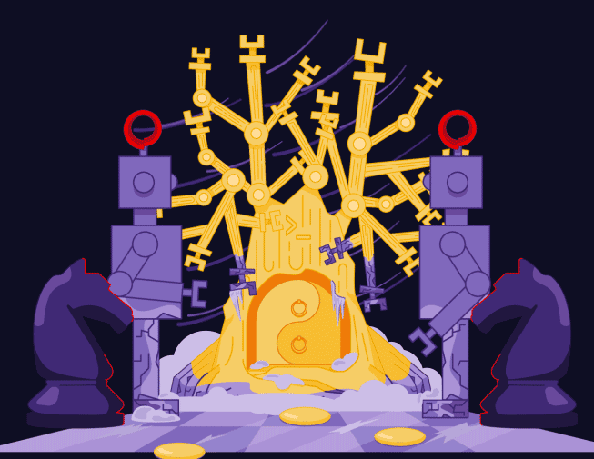

Discover Red Hat’s original podcast about the people who transform technology from the command line up. Subscribe to our newsletter for commentary from the Command Line Heroes team—and links to take a closer look at the topics we cover.

Creating a machine that thinks may have seemed like science fiction in the 1950s. But John McCarthy decided to make it a reality. And he started with a language he called LISP. Colin Garvey describes how McCarthy created the first language for AI. Sam Williams covers how early interest in thinking machines spread from academia to the business world, and how—after certain projects didn’t deliver on their promises—a long AI winter eventually set in. Ulrich Drepper explains that the dreams of AI went beyond what the hardware could deliver at the time.
But hardware gets more powerful each and every day. Chris Nicholson points out that today’s machines have enough processing power to handle the resource requirements of AI—so much so that we’re in the middle of a revolutionary resurgence in AI research and development. Finally, Rachel Thomas identifies the languages of AI beyond LISP—evidence of the different kinds of tasks AI is now being prepared to do.
00:05 - Announcer
Kasparov is rattled. He defends what he can, and he recognizes that he has already lost.
00:12 - Saron Yitbarek
In the spring of 1997, world chess champion, Garry Kasparov lost a match to the computer program Deep Blue. It was a pivotal moment in machine intelligence. For some, it was an existential crisis, a challenge to the supremacy of human intellect. But, for the technologists of the world, this was a milestone of another kind, a leap forward in the arena of artificial intelligence (AI). A sign that their dream of a truly intelligent machine might not be so crazy after all.
00:47 - Announcer
A machine that can think remains the dream, and it's still many years and quite a few startling breakthroughs away.
00:56 - Saron Yitbarek
How did we get to that point though? What breakthroughs led up to Kasparov's famous defeat? Where did we go from there? I'm Saron Yitbarek, and this is Command Line Heroes, an original podcast from Red Hat. All season long, we're exploring the mysteries of programming languages, uncovering their history and their potential. This episode we zoom in on artificial intelligence. What language do you use when your tech has a mind of its own? How did our programming languages help us get to that Deep Blue moment, and way beyond? The question of what language can work best with a thinking machine is something we've been tackling for more than half a century. So our story begins way back in the 1940s, when the term AI hadn't even been coined.
01:59 - Saron Yitbarek
Think back to the end of World War II. There's this sense that technology was how the allies won the war. There was this optimism that technology could accomplish anything. A whole generation believed in the power of computing. Out of that generation comes the godfather of artificial intelligence, John McCarthy. He's this brilliant mathematician who radically shook up the way we talk to our machines. I wanted to know about the origins of his ideas, and how that paradigm shift came about. I mean, for starters, when McCarthy and his peers were imagining the future of intelligent machines, what exactly did they imagine?
02:43 - Colin Garvey
Wow, that's a good question.
02:46 - Saron Yitbarek
I got talking with Colin Garvey. He's a historian in the Science and Technologies Studies department at the Rensselaer Polytechnic Institute. Here's some of our chat.
02:58 - Colin Garvey
McCarthy is remarkably kind of reticent about proposing exactly what it's going to look like. But, for example, he has probably his most famous program that was actually never implemented—but it's kind of a thought piece—was the advice taker. So, the advice taker was written up in 1960 by McCarthy in a paper called Programs with Common Sense. It starts off, you think the advice taker is probably a robot that will learn, and that's it's intention, kind of a domestic robot, it could take advice. You say, "No, you're doing that wrong. Do it this way." And it'll understand what you mean.
03:44 - Saron Yitbarek
That's helpful.
03:45 - Colin Garvey
Could be helpful. The whole goal of the advice taker is to drive from his desk to the airport, basically, formalized what his notion of what the advice taker robot should do, which is apparently drive him to the airport. He formalized it into a series of logical statements that, it would need to infer about what needs to happen in the current situation to turn the current situation into the desired situation. He formalizes this in kind of a pseudo code, we'd call it now. So this is actually where LISP originates as well. Then, in the next few years, LISP comes out as his implementation, or his language for implementing it.
04:39 - Saron Yitbarek
McCarthy's LISP language was a game changer. It would help a machine understand not only commands, but a common sense logic. What McCarthy discovered was that he could write conditional expressions, code that embodied rules, rather than just blunt commands. In fact, there were a bunch of major programming breakthroughs with LISP, conditionals, garbage collection, recursion, and lots more. LISP used lists for both code and data, a simple change with profound effects. All this opened a gateway for an entire field that McCarthy himself dubbed artificial intelligence. It was a language paradigm shift. Imagine, speaking to a machine without giving it every particular of information. Imagine inviting that machine to infer and reason. Through his LISP language, McCarthy hoped to give a kind of intelligence to the machine. Okay, back to my chat with Colin Garvey.
05:41 - Colin Garvey
It refined earlier attempts at writing a high-level computer language.
05:47 - Saron Yitbarek
Interesting, because that was going to be my next question was about the relationship between LISP and AI, so it's almost like that first idea of what AI could do, that advice machine was the beginning, it sounds like, of LISP. Tell me more about that relationship between LISP and AI.
06:04 - Colin Garvey
Sure. One of the things that these early AI folks was up against was that they're doing programming with punch cards, and probably these early guys knew how to program at the level of machine code. That's very time consuming and difficult. So you needed higher-level languages that you could instruct in ways that were closer in form to human language. So something like LISP gives instructions in literally a list of, and that's where the name comes from, list-based processing, in a list of instructions that are much closer to the human language, in the sense that they are basically logical propositions. So if you could read formal logic, you can basically look at a LISP program, or any of the logic-based programming languages, and have a much better sense of what's happening in the code.
07:10 - Saron Yitbarek
So LISP really helped ... Yeah, I mean, it helped us take our ideas of artificial intelligence, and actually work towards them and make them happen, which makes me wonder what intelligence even means during that time period. So if we go back to the '50s, at that point, what was intelligence? How did people even define that back then, because LISP was first developed for the IBM 704, which does really just one thing at a time. So it doesn't really sound very intelligent. Yeah, how did people think about intelligence at that time?
07:43 - Colin Garvey
So this is, of course, incredibly controversial. They have very narrow concepts, as far as I'm concerned, from a social perspective. But, yeah, at the time, for instance, the ability to perform a behavior that would be described as intelligent is kind of the catch-all definition. But, these guys are really mathematicians and logicians and computer programmers. I mean, to be crass, the ability to play chess was considered a definite sign of intelligence. This early generation of AI people, was much more willing to sidestep this question and say, "Well, the philosophers have not agreed on what intelligence is, but if we make a computer that can play chess, I think we can all agree that's intelligent."
08:40 - Saron Yitbarek
It was a starting place anyway. Baby steps.
08:45 - Colin Garvey
McCarthy had a dream that machines could be intelligent as people, and have common sense. And essentially, you could talk to them. He set about creating a program language to make that dream a reality. That became LISP, and it captured certain aspects of human thought, and especially logical thought, and made it possible to use computers to amplify or extend those features of thought. So from a mathematician's perspective, he was well on his way to realizing intelligent machinery.
09:32 - Saron Yitbarek
Colin Garvey is a historian in the Science and Technologies Studies department at Rensselaer Polytechnic Institute. With LISP, new opportunities to advance AI began to open up, and LISP was the standard language in that new frontier. After McCarthy left his post at MIT for a job at Stanford, other engineers back at MIT kept working on LISP. They refined McCarthy's language into a local dialect called Maclisp, and even developed a LISP operating system. It looked like McCarthy's dream of an AI future was well on its way to becoming a reality. In 1968, McCarthy even made a bet with David Levy, a Scottish chess master. McCarthy bet him that in 10 years a computer would be able to win a chess match against Levy. But, it wouldn't be a Command Line Heroes kind of story if things went that smoothly. McCarthy didn't know it yet, but the AI winter was coming.
10:45 - Saron Yitbarek
Things started to change when that LISP-based operating system from MIT was spun into companies. One of those companies, Symbolix, introduced LISP machines, and even hired away 14 staffers from MIT's AI lab, and that earlier, more blue sky kind of research wasn't the focus anymore.
11:25 - Sam Williams
You get all the spinoff companies that were coming out of the AI lab.
11:31 - Saron Yitbarek
This is journalist, Sam Williams, who wrote a book called “Arguing AI.”
11:36 - Sam Williams
Symbolix is probably the one that sticks out the most. It was getting the most attention, the most venture funding. John McCarthy's, all his proteges were kind of driving all that innovation. It's just a case, I think, where at the end of the '70s, there was a ripe period where people were like, "Okay, we've done what we can inside academia, let's get this out in the business world and let the private sector finance this."
12:01 - Saron Yitbarek
Which made sense at the time. AI looked like it was about to take off. There was money to be made.
12:07 - Sam Williams
The computing power is cheap enough for a mid-level business to purchase. So I think a lot of companies saw an opportunity, "Okay, we have a market for this, we can get out there and we can sell this to businesses that are trying to be globally competitive." They got investors to buy that pitch. There was a rush of money into the field in the early '80s.
12:29 - Saron Yitbarek
We can argue about why that rush of money ran dry later down the line. But, here's what we know for sure. Things had been incredibly hyped.
12:39 - Sam Williams
A lot of money flowed in. People saw the market as very ripe.
12:44 - Saron Yitbarek
In a way, that cash boom in AI was like a prelude to the dot com bubble that hit at the turn of the millennium.
12:52 - Sam Williams
As happens a lot in technology, people over-invested and eventually companies failed to deliver on what they were promising. In the course of that, then there's a sort of shut-off to the money supply. Companies have to make their money the old fashioned way, by actually building customer bases and stuff.
13:08 - Saron Yitbarek
So now, McCarthy's dream was crashing back down to reality. Williams describes the AI winter that followed.
13:16 - Sam Williams
You see a company like Symbolix, rises up to $100 million market cap, then a few short years later is filing for Chapter 11. There's a lot of, "In 10 years, we'll do this. In 5 years, you'll be seeing this." These guys are hype merchants, or they're just academics who are trying to squeeze more funding out of the Pentagon, or wherever they're getting money. So there's this dangerous hype, over-hype, AI, let's-move-on-to-something-else phenomenon.
13:48 - Saron Yitbarek
Interest in AI just crashes. It didn't help that the infrastructure wasn't there, or that computing speed wasn't high enough. But, at any rate, this was a case of right idea and wrong decade. By the late '80s, AI research was dwindling.
14:06 - Sam Williams
I think that people got away from what drew them to AI as a field, which was it was very adventurous. It was a chance to do the cutting edge. Out in the west coast, a lot of the energies getting drawn into let's make personal computers. Think from 40 years later, the attempt to get a computer into every home in the United States is a way more compelling concept than helping some Fortune 1000 businesses make better decisions.
14:39 - Saron Yitbarek
Sam Williams is the author of “Arguing AI”. What we're describing here is a world of computer programming that was split into two. On the one hand, you've got the John McCarthys, trying to use new kinds of languages like LISP, to inquire into the nature of intelligence. On the other hand, inevitably, you've got folks trying to solve practical problems and make things easier for businesses that are willing to pay for services. The reality was that the John McCarthys of the world, those more abstract dreamers, didn't have much of a chance to explore deep in the possibilities of AI. The equipment they had wasn't even comparable to the cell phones we use today. Their vision was really too big for the hardware realities on hand.
15:36 - Ulrich Drepper
We had machines, big honking machines, which are used by many, many people in the work groups.
15:46 - Saron Yitbarek
That's Ulrich Drepper, a distinguished engineer at Red Hat. He explains how that early AI dream just didn't have the basic tools it needed to succeed.
15:55 - Ulrich Drepper
We have PDP 10s, PDP 11s, etc., these kind of machines, where you might have 20 people on them. At best, they were really low-power machines, which didn't really have the capability of running a nicely developed user interface in addition to all the functionality necessary for a LISP system.
16:19 - Saron Yitbarek
As decades rolled on, the hardware that was being developed wasn't friendly towards LISP either.
16:26 - Ulrich Drepper
We went down the road for the desktop machines, but also for the server machines. Of the type of processors which we are accustomed to today, so we are having the visions inside the processes based on 8-bit bytes. So we might have a 16-bit processor, or a 32-bit processor, etc. So for these types of machines to implement in LISP system efficiently, one had to jump through quite a few hoops to actually make it work.
16:56 - Saron Yitbarek
So external realities about the computing world were having unintended dampening effects on this fragile field of artificial intelligence.
17:06 - Ulrich Drepper
The custom hardware turned out to be such an expensive and slow prospect, especially when compared to the CPUs, which were in common use. The big CPU manufacturers.
17:21 - Saron Yitbarek
It was possible to create those custom hardware workarounds and keep working with LISP, keep trudging toward that AI dream. But, the fact was, exciting new hardware pushed a lot of minds towards other areas of work.
17:35 - Ulrich Drepper
The improvements you got by just waiting for the next revision of the processor, that normal processor, was so much bigger than what you can achieve and gain by developing your own hardware for solving, for instance, implementing a LISP system. So that, in the end, the complexity simply didn't work out.
18:03 - Saron Yitbarek
So, was John McCarthy's wide-eyed dream dying a slow death, or was it only sleeping through that long AI winter, waiting for its moment? Through the 2000s, John McCarthy's language, LISP, was used less and less. But, something kind of amazing happened at the same time. The language began to fade, but the dream connected to that language got rekindled. The dream of AI began to live again.
18:34 - Chris Nicholson
I want to say this time is different.
18:36 - Saron Yitbarek
That's Chris Nicholson, the founder and CEO of an open source AI software company called Skymind. Chris figures that, after all its ups and downs, AI may be coming into a long sustainable summer at last.
18:52 - Chris Nicholson
We're in the midst of an AI summer where there's a lot of excitement around what AI can do. But, that excitement is based on real advances in research, and those advances are based on progress in other areas. Our hardware has gotten a lot better, people are able to use GPUs instead of CPUs, and they're able to use those GPUs in massive clusters to train enormous machine-learning models that can produce really accurate predictions. They do that using massive datasets, more data than we've ever had before, much more data than we had in the '90s, or '80s, or before.
19:30 - Saron Yitbarek
When you're thinking about AI languages, the rise of enormous datasets is key, because they represent a crucial change in the way we understand what intelligence even is. The focus shifts and becomes all about deep learning.
19:47 - Chris Nicholson
LISP was designed to manipulate symbols. LISP was designed in an era when AI meant symbolic reasoning, when people thought that the human mind and intelligence itself was simply a manipulation of symbols. AI now, the AI we're really excited about, is much more than that. AI now, in machine learning now, is a massive data processing machine that can learn from unstructured data. So, blobs of pixels, blobs of text, you can shove them through machine-learning algorithms and make those algorithms smarter and smarter over time as you push the data through. LISP wasn't designed like that. It was designed to only evolve on the back of human intervention. Whereas, machine-learning algorithms now, the learning part of them means that they adapt themselves on the basis of the data they're exposed to.
20:40 - Saron Yitbarek
This is about letting our machines be intelligent on their own terms. But, you know, it's not just our machines that are learning to think in powerful new ways. Open source tools have allowed people to up their game, too. Chris figures our open source development styles are going a long way to preventing another AI winter.
21:03 - Chris Nicholson
One reason why winters happen is because ideas slow down, networks break down, funding dries up. With these free open source tools, what we see is an acceleration. So we see ideas getting tested faster, ideas getting shared more quickly. So it's not just the tools, but it's pre-trained machine-learning models that one research group might share with another research group, or with the public-at-large. Finally, it's the ideas themselves, which are getting published in locations like ARXIV. ARXIV, which is hosted by Cornell University. So all those things together are accelerating kind-of the velocity of the flow of ideas. For me, that's kind of insurance against an AI winter. There's this confluence of factors that makes AI a super-exciting place to be, and that actually means that AI is moving even faster than the hype.
22:03 - Saron Yitbarek
Chris Nicholson is the founder and CEO of Skymind. So, open source was able to thaw out the AI winter that older proprietary models had helped to create. The new AI moment came with vast improvements in GPUs. It came with algorithmic breakthroughs that help us train AIs to learn patterns in data. And then, the data itself. Massive datasets are fueling today's AI. That, more than anything, is why new languages are picking up the trail where LISP left off. We ask Rachel Thomas, a co-founder of Fast AI about which languages are suited to next-gen AI.
22:50 - Rachel Thomas
We're starting to look at Swift for TensorFlow. Swift is a language developed by Chris Lattner, and I know there are people using Julia, and developing Julia. But, for right now, Python is kind of overwhelmingly what is used in deep learning.
23:03 - Saron Yitbarek
That's because Python is beautifully suited to working with large datasets.
23:08 - Rachel Thomas
I think something that's really changed in the last 20 years, is the rise of data and the increase of data. I think that a lot of earlier work on AI going back decades, was more around kind-of symbolic systems, these kind-of abstract symbolic systems. I would say a lot of the work happening in AI right now, is very much around data and identifying something in an image, classifying whether a review somebody has written of a movie is positive or negative. These are problems that are grounded in data. So, one of the reasons, I think, Python has kind-of emerged, at least as an early winner, is because the ecosystem with NumPy and SciPy and pandas, and all the data libraries in Python were well-developed enough.
24:02 - Saron Yitbarek
In the days when John McCarthy's group worked at MIT, AI really was something only the world's elite academics could get involved in. But, languages and computing environments have evolved so much since then, that AI is now really for everybody. We heard in episode 1 this season, Python is a first language for lots of beginners. It's empowered novice programmers to join the world of AI.
24:29 - Rachel Thomas
I just want to tell people that there really is just one year of coding experience is the only background you need. You don't need to be "a bath genius" or to have this really prestigious, or exclusive, background. But, that we need people from all backgrounds. Actually, by having a different background, you have a lot to offer to the field, and that we need your perspective.
24:52 - Saron Yitbarek
Rachel Thomas is a co-founder of Fast AI, and a professor at the University of San Francisco Data Institute. I love that message from Rachel Thomas. The story of AI is a story about discovering languages that everybody can communicate with. That's our real mission here, to develop language solutions for a world filled with AI. Solutions that let us all work together to build that next breakthrough.
25:22 - Announcer 1
Folks, you saw history made here today. AlphaGo has won the match in great style.
25:32 - Announcer 2
Yeah, and it even showed us its code.
25:34 - Speaker 7
And even showed us its code. So I think congratulations to the program.
25:40 - Saron Yitbarek
In 2015, just a couple decades after Garry Kasparov lost that chess match to Deep Blue, the world champion at the game of Go, Lee Sedol, was defeated by Google's AlphaGo. Deep Blue had shown its intellectual might, pretty much through brute computational force. The thing about AlphaGo's victory that really surprised everyone, was that it won that match by relying on neural networks and reinforcement learning. In other words, AlphaGo had successfully taken that next step towards true intelligence. None of that would have been possible without the new AI spring fueled by open source. New languages are edging toward that dream. Our languages are getting better at maximizing the intelligence of machines. The good news, it's a challenge we can all work on together in an open source world.
26:39 - Saron Yitbarek
Command Line Heroes is an original podcast from Red Hat. If you want to dive deeper into LISP and the origins of artificial intelligence, you can check out all our bonus material over at redhat.com/commandlineheroes. You'll find extra content for every episode. Next time, it's our season finale. We'll uncover some surprising truths about a massive language that influenced nearly every other language we studied this season. It's our in-depth look at C. In the meantime, I'm Saron Yitbarek. Keep on coding.
Keep going
LISP and the Origins of A.I.
This episode of the Command Line Heroes podcast explores shifting programming paradigms, the invention of LISP, and the rise of thinking computers.
The Road to AI
Self-driving cars are here, and it's starting to get weird. This is a story about data, decisions, and the future of an entire industry.
Enjoy this episode's artwork on your device
Download the Command Line Heroes artwork and set it as your background.
{kind=link}
{kind=link}
{kind=link}
Featured in this episode
Also in this episode
Sam Williams
Journalist

Get the newsletter
After each episode drops, we'll send you commentary from the Command Line Heroes team, as well as links that help you take a closer look at the topics we cover. It's as simple as that.
Presented by Red Hat
For 25 years, Red Hat has been bringing open source technologies to the enterprise. From the operating system to containers, we believe in building better technology together–and celebrating the unsung heroes who are remaking our world from the command line up.